已部署并有真实红/绿灯证据，可靠性验收未通过。远灯、转灯连续ID、箭头/行人灯及控制归属未完成。控制全部未知、不自动放行。
完整交付说明 · 模型/许可证 · 性能与UNKNOWN覆盖
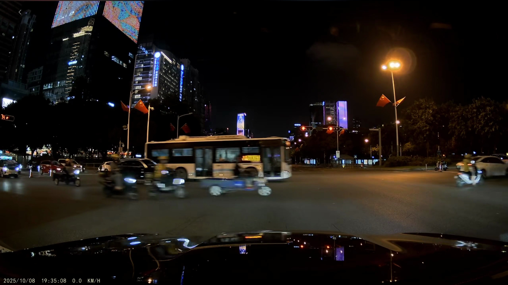
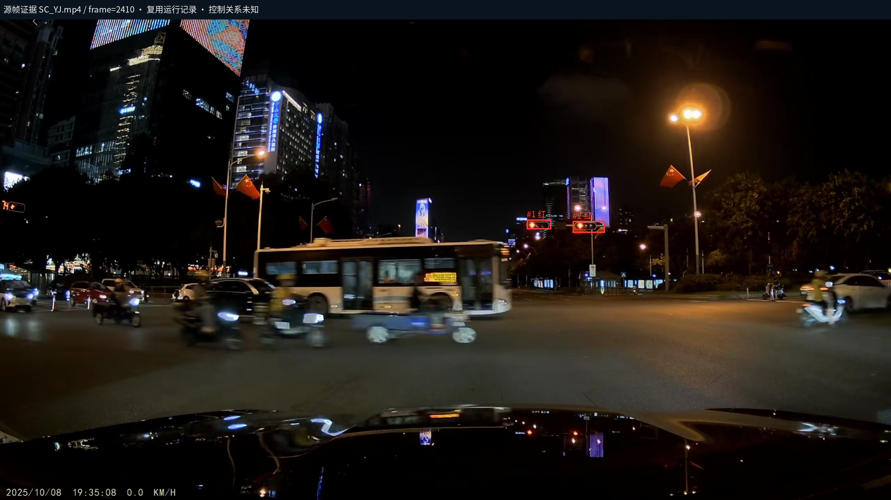
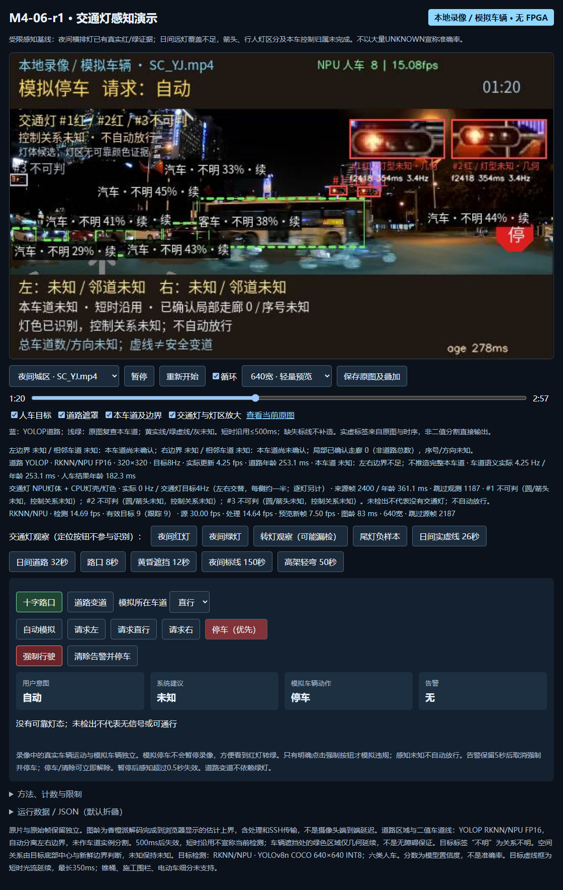
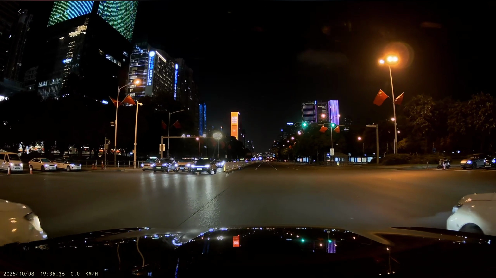
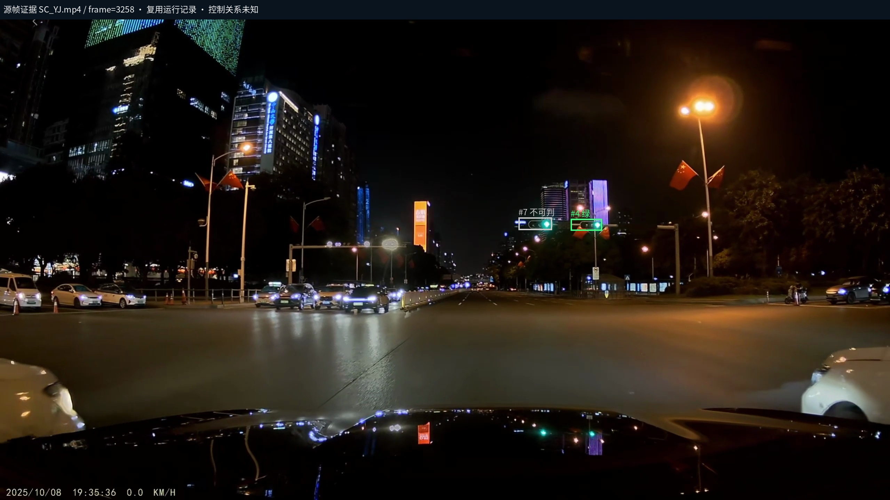
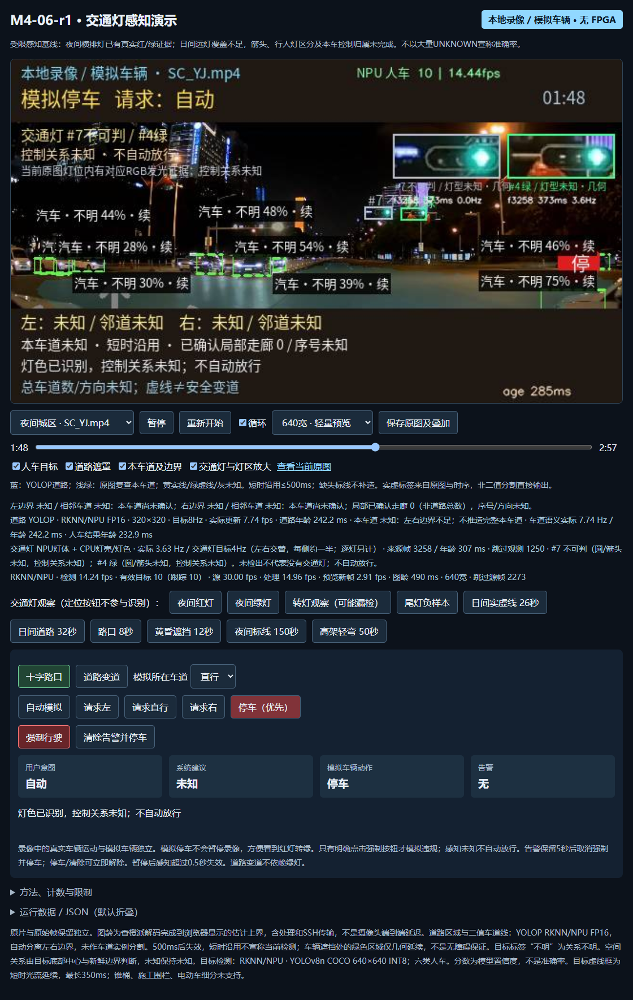
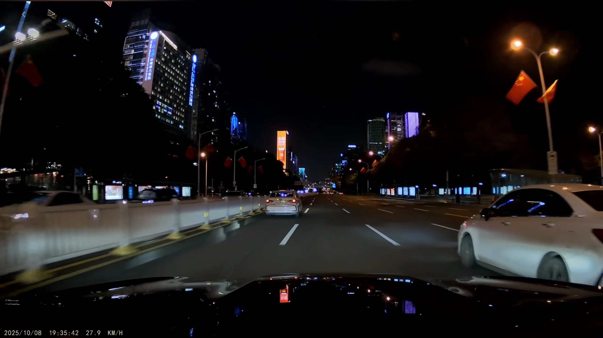
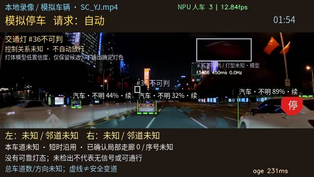
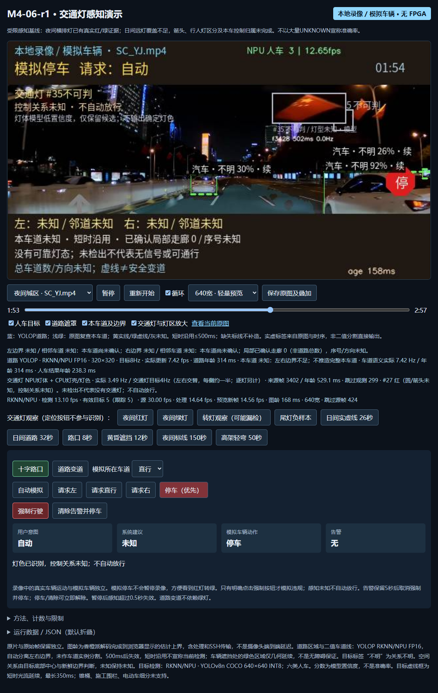
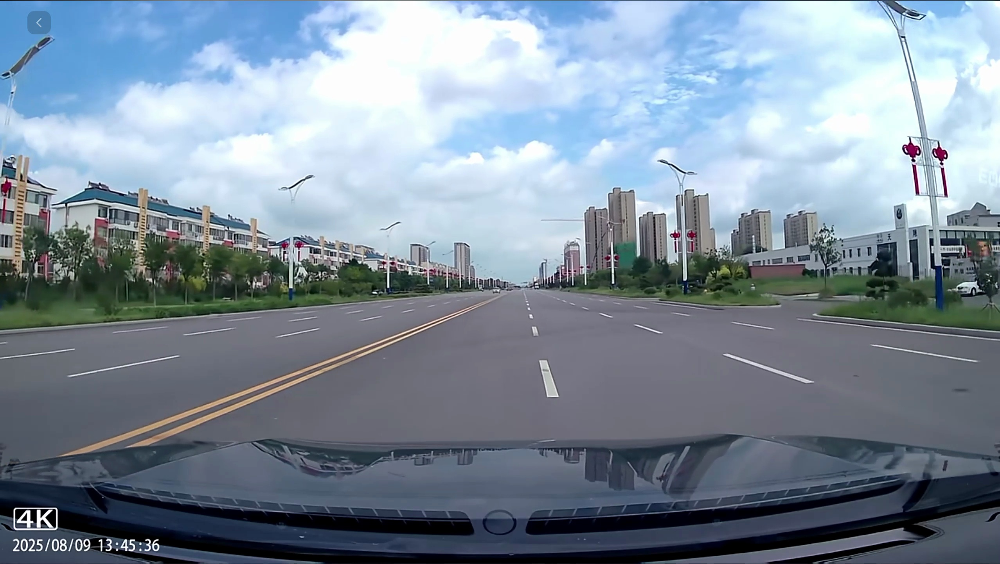
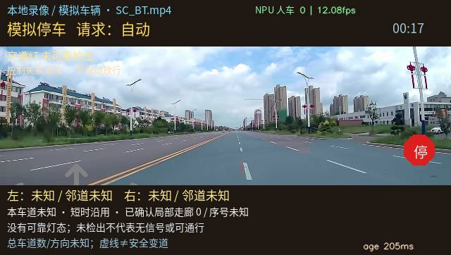
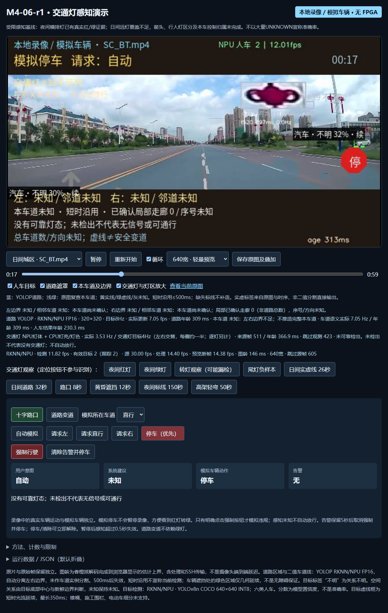
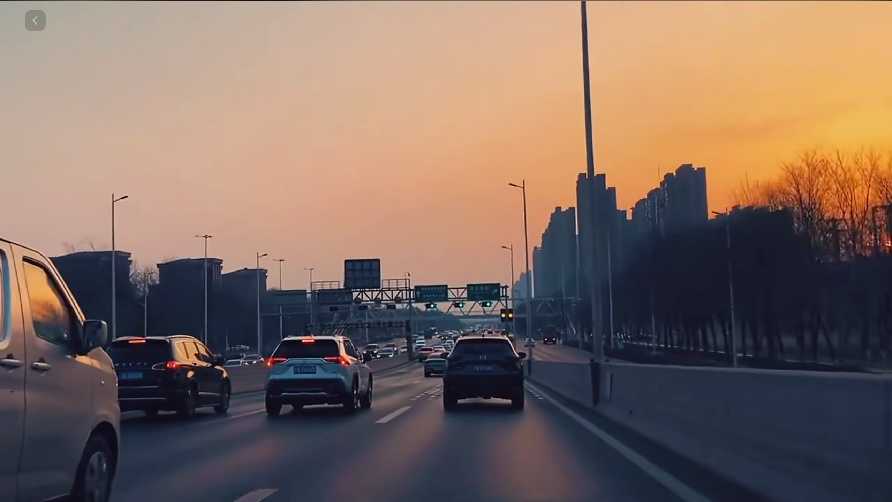
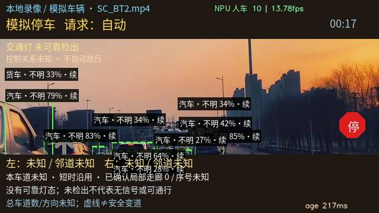
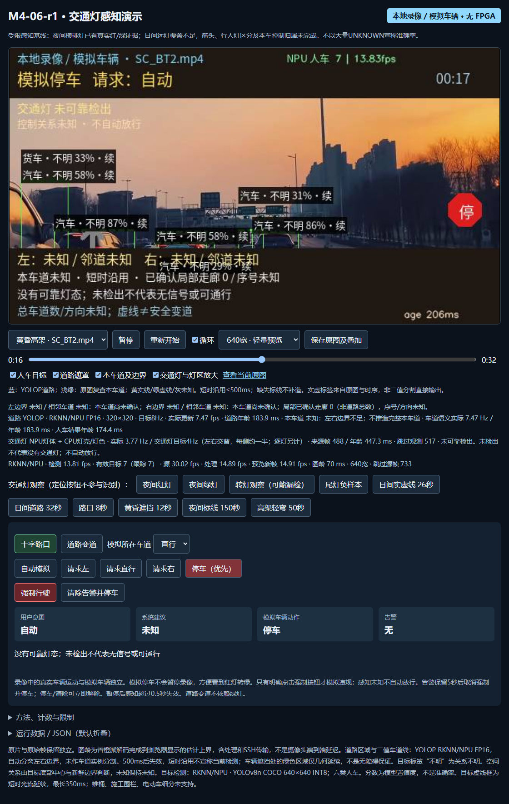
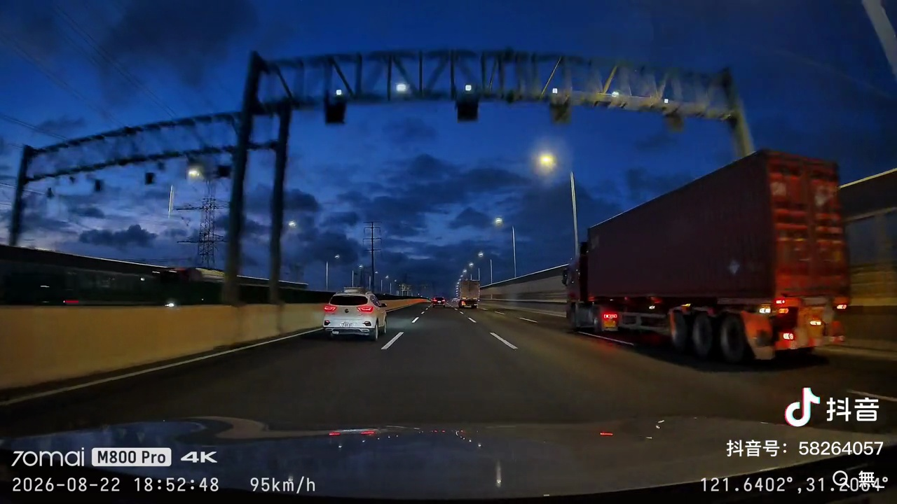
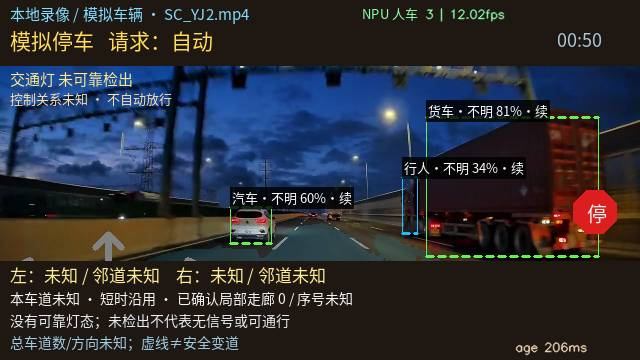
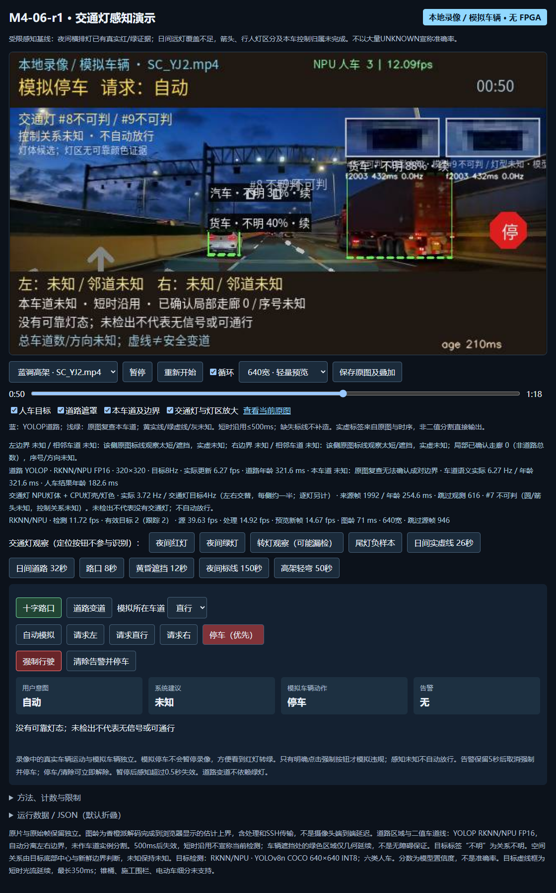
下图包含楼体LED被误判绿灯的原记录。已增加局部纹理否决，并有真实正/负样本回归；不能推断所有招牌误检已解决。
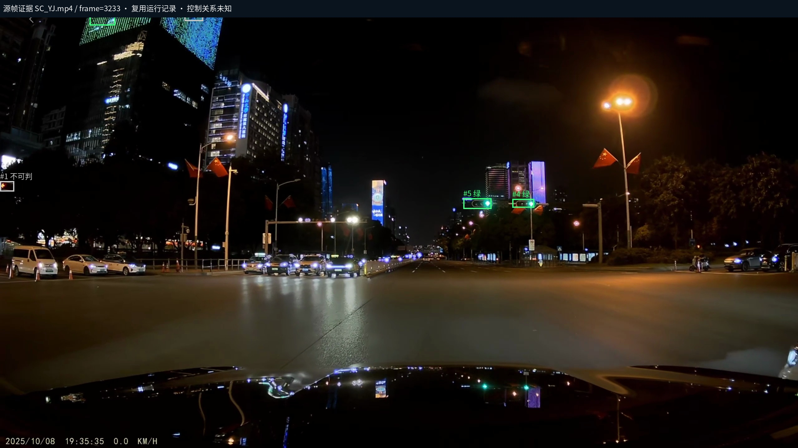
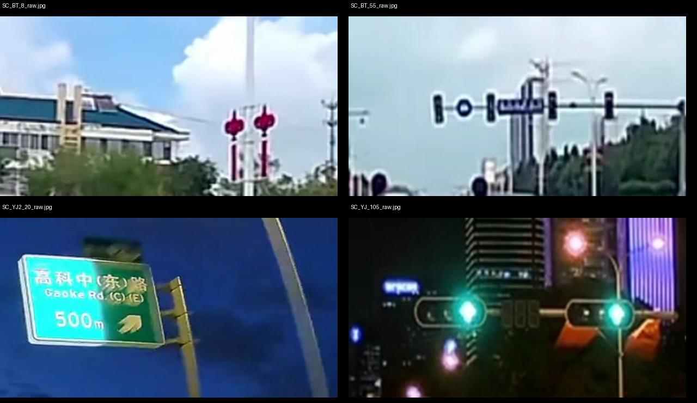
依次：装饰物、远灯、路牌负样本、真实绿灯。裁剪仅用于审查，不进入算法。